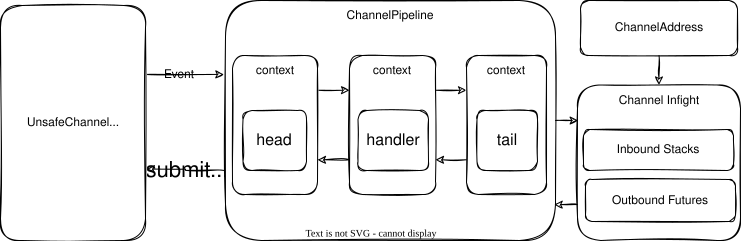
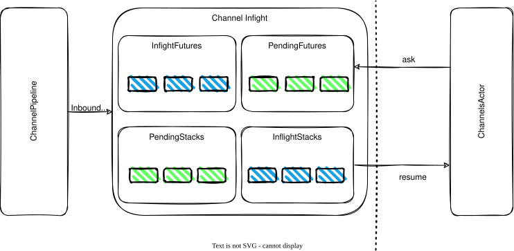
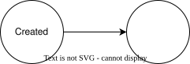

IO 模型
otavia 的 IO 模型是一个分层的、与 actor 集成的 IO 框架，受 Netty 启发并围绕 Actor 模型重新设计。每个 ActorThread 拥有自己的 IoHandler（带有专用的 NIO Selector），以时间片循环运行 IO 和 actor 逻辑。

架构分层
Java NIO (Selector / SelectionKey)
│
NioHandler (IoHandler ── 每个 ActorThread 拥有)
│
Channel Transport (AbstractNioUnsafeChannel, NioUnsafeSocketChannel 等)
│
Channel Pipeline (ChannelPipelineImpl ── 双向链表 handler 链)
│
AbstractChannel (inflight 管理 + barrier 机制)
│
ChannelsActor (处理来自 Inflight 系统的解码消息)
Channel Inflight
AbstractChannel 通过四个 QueueMap 实例管理消息并发：
// 出站 (Actor → Channel → 网络)
inflightFutures: QueueMap[ChannelPromise] // 正在被 IO 层处理
pendingFutures: QueueMap[ChannelPromise] // 等待发送
// 入站 (网络 → Channel → Actor)
inflightStacks: QueueMap[ChannelStack[?]] // 正在被 Actor 处理
pendingStacks: QueueMap[ChannelStack[?]] // 等待 Actor 处理
QueueMap 是自定义数据结构，结合了哈希表（按实体 ID 的 O(1) 查找，用于响应关联）和双向队列（FIFO 顺序，用于顺序处理）。

Barrier 流控
两个 barrier 函数控制消息流：
futureBarrier: AnyRef => Boolean（默认_ => false）：控制出站流。检测到 barrier 消息时，一次只能有一个 future 在处理中。stackBarrier: AnyRef => Boolean（默认_ => true）：控制入站流。为 true（默认）时，消息逐条顺序处理。
通过 ChannelOption 配置：
| 选项 | 说明 | 默认值 |
|---|---|---|
CHANNEL_FUTURE_BARRIER |
出站 barrier 谓词 | _ => false |
CHANNEL_STACK_BARRIER |
入站 barrier 谓词 | _ => true |
CHANNEL_MAX_FUTURE_INFLIGHT |
最大并发出站 future | 1 |
CHANNEL_MAX_STACK_INFLIGHT |
最大并发入站 stack | 1 |
CHANNEL_STACK_HEAD_OF_LINE |
Stack 是否队头阻塞 | false |
Channel 行为的抽象
ChannelFuture
ChannelFuture 代表 Actor 向 Channel 发送请求并期望获得回复。由 StackState 管理，与 Stack 执行模型集成。通过 ChannelAddress 使用：
// 在 ChannelsActor 中，使用 ChannelFutureState：
val state = ChannelFutureState()
channel.ask(myRequest, state.future)
stack.suspend(state)
ChannelStack
ChannelStack 代表 Channel 将解码后的消息发送给 Actor 进行业务处理。当 TailHandler 收到入站消息时，创建 ChannelStack 通过 Inflight 系统路由到 Actor。
注意：与 Netty 的 ChannelFuture（追踪单次出站调用的结果）不同，otavia 的 ChannelFuture 是比 Netty 更高级的抽象，代表网络请求的期望数据响应。
完整 TCP 读生命周期
1. Actor 调用 channel.read() → pipeline.read() → HeadHandler.read()
→ channel.readTransport() → ioHandler.read(channel, plan)
2. NioHandler 处理 OP_READ 就绪的 key
→ NioUnsafeSocketChannel.handle(key) → readNow() → readLoop()
3. doReadNow0(): page.transferFrom(ch) 从 socket 读取
→ channel.handleChannelReadBuffer(page)
4. 数据进入 channelInboundAdaptiveBuffer → pipeline.fireChannelRead(buffer)
5. Pipeline 处理：Decoder → ... → TailHandler
→ TailHandler.channelRead → channel.onInboundMessage(msg)
6. onInboundMessage: 创建 ChannelStack → pendingStacks
→ processPendingStacks → executor.receiveChannelMessage(stack) [进入 actor 邮箱]
7. Actor 线程处理 ChannelsActor → dispatchChannelStack → resumeChannelStack
→ 用户代码处理解码后的消息
核心要点：原始字节在 ActorThread 循环的 Phase 1（IO）阶段通过 pipeline 处理。解码后的消息通过 Inflight 系统进入 Actor 邮箱，在 Phase 2（IO Pipeline）阶段处理。
完整 TCP 写生命周期
1. Actor 调用 channel.ask(value, future)
→ 创建 ChannelPromise → pendingFutures → 调度处理
2. ActorHouse.run() → processPendingFutures()
→ pendingFutures.pop() → inflightFutures.append(promise)
→ pipeline.writeAndFlush(msg)
3. Pipeline 出站：Encoder → ... → HeadHandler.write()
→ channel.writeTransport(msg) → 写入 channelOutboundAdaptiveBuffer
4. HeadHandler.flush() → channel.flushTransport()
→ ioHandler.flush(channel, payload) → NioUnsafeSocketChannel.unsafeFlush()
→ 写入 SocketChannel，部分写入时启用 OP_WRITE
5. 响应到达：Read → Pipeline → TailHandler → onInboundMessage
→ 解决 inflight future：promise.setSuccess(msg)
→ Actor 的 attached future 完成 → Stack 恢复
完整 TCP Accept 生命周期
1. Server channel 注册 + 绑定 → OP_ACCEPT interest 设置
2. NioHandler.run() → OP_ACCEPT 就绪 → NioUnsafeServerSocketChannel.handle()
→ doReadNow() → javaChannel.accept() → 新 SocketChannel
3. 创建 NioSocketChannel → executorAddress.inform(AcceptedEvent)
→ 事件进入 ChannelsActor 邮箱
4. ChannelsActor 接收 AcceptedEvent → pipeline.fireChannelRead(accepted)
→ 用户 handler 处理新 channel（注册到线程的 ioHandler）
Channel 状态
Channel 状态使用位压缩存储在单个 Long 中。22 个生命周期布尔值（created、registered、bound、connected 等）和配置布尔值（autoRead、writable 等）打包到一个 64 位字中。
